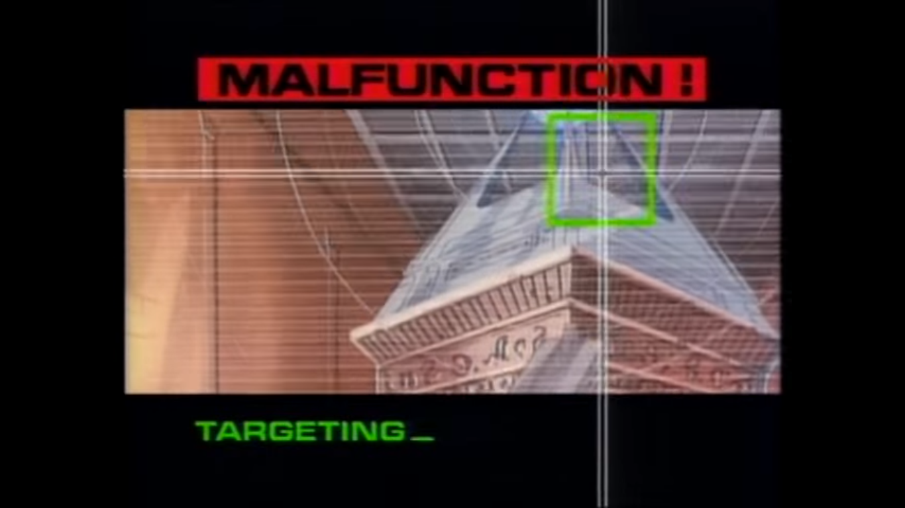

Hello there reader !! If you have been following this blog, then you must have guessed that I will be giving my review on the technologies presented by other students. Being a child who grew up watching RoboCop and getting amazed by how a cyborg is saving the day using his awesome tech to help save the day. One thing that I always liked about that show was the interface that RoboCop would see based on what he is about to do. It could be targeting where to shoot or it could be doing analysis of the surroundings. The interface would look someting like this:

Now, you know that I like the enhanced displays. Then it was very natural for me to be interested about any head mounted display for augmented reality. Hence, for this week's assignment I chose Raptor Augmented Reality glasses by EVERYSIGHT. This product was presented by Stefano Sonzogni. These glasses are designed for the bicycle riders for an enhanced experience. I will discuss about their feature in details below but for now take a look at what it looks like.
Firstly, I would like to talk about the components that have been packed sleekly into the device. The components are:
Android Operating System
Global Positioning System
32 GB Hardrive
2gb RAM
Accelerometer
Baromater
Magnetometer
Gyroscope
Proximity Sensor
Using these sensor's the data glasses are capable of showing following information related to the rider:
Speed
Distance
Time
Power
Heart Rate
RPM
Raptor's features can be categorised based on the functionality it is being used for:
Just ride: Think of yourself as a hobbyist bicycler. You like to ride around daily and follow a pre-decided path. You just want to monitor basic data. This mode is for you. The display will show you your selected data on to your display. Following is the sample video:
Navigate: In this mode, user can also view the map alongwith real time navigation directions. However, user needs to download and transfer the maps to the glasses manually. This provides the cyclist the information related to where to turn and how much distance left which was not possible earlier and the cyclist had to stop and look at maps in his/her device for directions
Training: In this mode, the glasses show you your work out related information along with the performance metrics. This provides the cyclist with all the information about the current state of his/her workout. Also, this information can be shared live to other devices which can be used by coach/trainer to guide him/her more efficiently.
In addition to these features, there are couple other features that need mention:
Video recording and picture capability: There is a 13.2 MP camera attached at the front of the glasses alongwith the embedded microphone. This provides the option for user to take HD pictures and record videos. This is similar to Go Pro. The click and record features are activated by swipe gestures on the right side of the glasses. For the cyclists who wants to always keep their hands on bicycle handle, Everysight has released a remote for controlling the features from the hand. There is also an option of sharing the clicked photos and videos via Strava
Song playlists: User can also load mp3 songs playlist to the Raptor to listen to them while cycling. Again, controlling music is swipe based and then user can use remote controller if he/she doesnt want to use swipe feature.
Now, we know about the basic features offered by the glasses, I can give you a basic critique about the glasses. Where the creators did a good job and where they need to make improvements.
Critique
From the first looks, it seems that it is a quite useful product. Cycling is a great sport but a lot many things were done without technology because you dont want to add any additional weights of sensors to bicycle/rider's body. Since glasses are one of the kind of must haves for cyclists as they provide protection from UV rays and dust while riding, it is a very smart place to add sensors. Since body motion is not prohibited, its good to have them. Now lets talk about how it fared for bicyclists and tech enthusiasts.
Design: When you look at the design of the glasses, they do not look any different from the other bicycle glasses available in the market. I have added an image below for the reference.However, one important thing to note about them is their weight. With the weight of 98gm whereas the regular glasses weigh around 35 gm, it is definitely very bulky. However, fitting so many useful things by just adding 60 gm to the weight must have required many engineering optimisations which according to me is a really great thing. Now, when we talk about the style aspect of it, they are not really stylish looking and hence I do not see anyone wearing them in public. But as far as cyclists are concerned, it is perfect for them.
User onboarding: Whenever, you get hold of a new gadget, your first challenge is to figure out how to use it. Many people are not tech enthusiasts and have trouble figuring out whic button does what. This is the reason companies emphasize on creating intuitive design for their products. For wearable tech, not many people have actually wore technology enable glasses. So, it would be difficult to pin point what are the intuitive designs for the glasses. Secondly, with using these glasses, there is a shift in what a rider is going to see on the road. Hence, it was expected that getting used to their functionality and display and being able to navigate properly is going to be a tough task. However, Everysight has provided a comprehensive set of tutorials on how to use the glasses. Also, they recommend to go for a short ride to get used to the glasses and then using them on the basis of full time.
Performance: Now let's talk about how it does what it is suppsoed to do.
Display: First, lets talk about its display. The display is bright enough to be read properly. As discussed in my previous point, it takes sometime to get used to reading it but when your mind is adjusted to it then its not really an issue.
Data Accuracy: The information shown is correct and there are no issues with respect to accuracy of data.
Battery: On an average, ne complete cycle of battery lasts for 8 hours on the device. This is enough for casual riders, but not enough for professionals who ride for long hours. However, user can charge the battery on the go by using a portable USB charger
GPS: Inbuilt GPS systems is little bit clumsy but there are not many issues with respect to that. With respect to voice commands, sometimes user needs to speak again for it to recognise commands properly.
Price: The device is charged at 500 USD which is very expensive for most of the riders. Agreed that the amount of technology justifies the price. But if we look at the use case, most of the rider would not really care about the data and can easily live without it.
Conclusion
Overall, the product looks good. Is useful in many of the cases but the biggest barrier for mass acceptance by the market is its price. The utility of the glasses does not really provide alot many advantages to justify its price. Hence, it is a good to have gadget not a must have. So, if you have enough money, go ahead and purchase it else you will be fine without them as well.